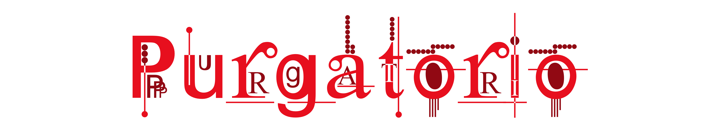
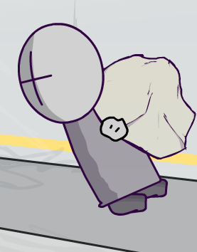

Infernolly Studios by Xman and Enchie
Purgatory, or The Other Place, is the second realm of the Madness Combat Infernolly lore. Purgatory is a supermassive mountain of cleansing and purification. The goal of Purgatory is to cleanse souls of their sins and permit them into Heaven.
There are nine layers to the mountain, each having its specific punishment. Once reaching Eden, the highest layer, Shades will wait to be transported to Heaven. Rumors speculate that Eden is now a town due to the disappearance of an angel.
Cruelty is one of the lowest layers of Purgatory, no one knows what lies beneath. Souls are placed in a dark red hellscape where they fight their worst fears. Every injury cuts a part of their physical body, and they will be consumed by Purgatory and morphed into Shades.
Punishment: The environment is purely based on life experiences, you cannot spot other individuals in this layer as it is a personalized hell.
Danger Level: High
Pride is the first layer of Purgatory Proper. It is a large plane of boulders and marble rock with a shiny gold color inside. Due to the invention of a Demon Deterrent System (DDS), a city has emerged in the center, where a small group of people hold power over others.
Punishment: Due to the presence of demons, souls must carry heavy marble rocks uphill to where they can cut them up or carve them into statues. A lot of the architecture of the other layers comes from Pride.
Danger Level: Low
Envy is a dark blue cavern of blind, lost spirits. All souls in Envy are stripped of their eyesight and forced to wander through the crag.
Some shades were spotted harming other souls using canes made out of stalagmite. After stealing the cane, they then proceeded to use it as a blind cane, proving to us researchers how much the sin of Envy affects people.
Punishment: Those in Envy are punished by having most of the water taken away from them. Upon reaching for a pool of water, it disappears in their hands, punishing them for their envy.
Danger Level: Medium
Unexplored...
Unexplored...
Unexplored...
Unexplored...
Unexplored...
Unexplored...
Type: Shade / The Dead
Population: ~350000
Shades are the deceased souls of Nevadans. After being consumed by Purgatory, their souls are separated from their physical forms and transported to Purgatory Proper. Shades can interact with the environment despite being “ghosts.” As long as someone is a shade, they are subject to the punishments of Mount Purgatorio.
Type: ???
Population: ~250
Agents are AAHW Agents summoned through reality manipulation. They appeared in Pride for an unknown reason. They are physical beings that think and have emotions. Some Agents had incorrect forms due to blurry memories.
Type: Nevadan?
Xman is a Nevadan destined to conquer Purgatory. This version of him follows Infernolly Arc 1 and possesses powers from it.
His appearance contains a large dark poncho with a necklace tied around his neck. The symbol on the necklace is a Unicursal Hexagram, a symbol representing planetary and spiritual masses. Xman has blonde hair and gloves with his outfit.
Powers:
Super dash,
Telekinesis (magnetic glove),
Super strength (low),
Durability (medium),
Danger sense
Type: Demon
Cyrus is one of the highest-ranking Demons in Purgatory. His job is to stop the living from entering Purgatory. Cyrus locates living Nevadans and kills them. There is no way for him to take them out of Purgatory.
Cyrus wears an overall dark outfit with a short jacket, pants, and undershirt. His body is a dark, desaturated red, and has light wings on his back.
Cyrus carries a spear of unknown power.
Powers:
Super speed, Flight, Super Strength (high), Durability (Extreme), Demonic Abilities